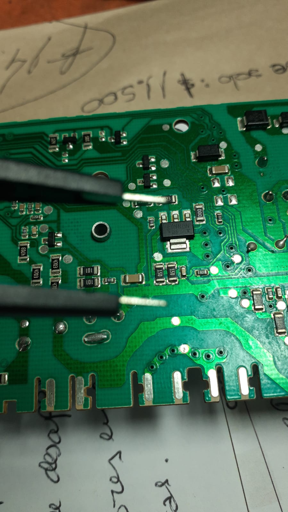
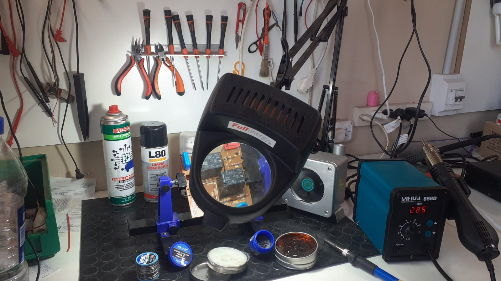

En el corazón de nuestra oferta de servicios se encuentra nuestro compromiso inquebrantable con la plaquetería electrónica. Nuestra empresa ha perfeccionado el arte de instalar y mantener placas y componentes electrónicos con precisión y eficiencia. Desde la implementación de placas electrónicas hasta la reparación de sistemas complejos, nuestra plaquetería de vanguardia garantiza el funcionamiento óptimo de sus equipos electrónicos, proporcionando soluciones sólidas y confiables que se traducen en un rendimiento superior.
El pilar fundamental de nuestro éxito reside en nuestro equipo de técnicos altamente capacitados. Cada miembro de nuestro equipo está dedicado a la excelencia en la plaquetería electrónica y ha recibido una formación exhaustiva en las últimas técnicas y tecnologías. Esta capacitación constante permite a nuestro equipo abordar con confianza y competencia los desafíos más complejos en el campo de la plaquetería, asegurando una ejecución impecable y un servicio de calidad insuperable.
Nuestra firma es conocida no solo por su experiencia en plaquetería electrónica, sino también por su amplia versatilidad en la prestación de servicios técnicos. Adaptamos nuestra experiencia en plaquetería para satisfacer las necesidades específicas de cada cliente, ofreciendo soluciones personalizadas que van más allá de la instalación y el mantenimiento de placas. Desde la detección de problemas y diagnóstico preciso hasta la adaptación de soluciones a medida, nuestra flexibilidad y atención meticulosa al detalle garantizan resultados sobresalientes que superan las expectativas de nuestros clientes.
